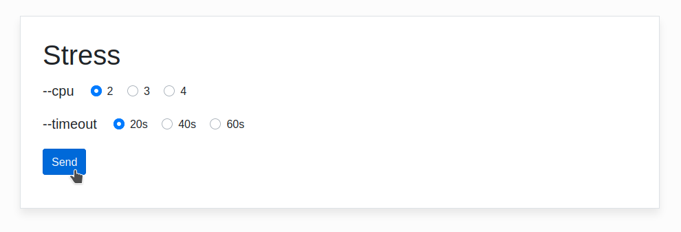
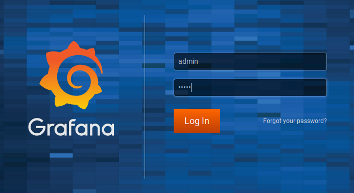

EKS + Prometheus + Grafana
- Install Prometheus and Grafana on Kubernetes
- Set up a website to perform a CPU stress test
- See the evolution of Prometheus metrics and Kubernetes autoscaling

Install, setup and explore the project
Get the code from this github repository :
# download the code
$ git clone \
--depth 1 \
https://github.com/jeromedecoster/aws-eks-prometheus-grafana.git \
/tmp/aws
# cd
$ cd /tmp/aws
To setup the project, run the following command :
# install eksctl + kubectl, download kube-prometheus
$ make setup
This command will :
- Install eksctl if it is not already installed.
- Install kubectl if it is not already installed.
- Download a kube-prometheus release.
Let’s test the website :
# run the website locally
$ make dev
By opening the address http://localhost:3000 you can see the website :

It’s a website built with a node that allows you to play with the stress executable :
const { execFile } = require('child_process')
const bodyParser = require('body-parser')
const nunjucks = require('nunjucks')
const express = require('express')
const app = express()
// ...
app.post('/stress', (req, res) => {
console.log(req.body)
const cpu = req.body.cpu
const timeout = req.body.timeout
execFile('/usr/bin/stress', ['--cpu', cpu, '--timeout', timeout])
return res.render('stress', {cpu, timeout})
})
We execute the stress by clicking on the send button :
I am using htop to see that 2 processor cores are at full capacity for 20 seconds :
We can stop the website with Ctrl + C.
This site has been transformed into a docker image via this Dockerfile :
FROM softonic/node-prune AS prune
FROM polinux/stress AS stress
FROM node:14.11-alpine AS build
# With `NODE_ENV=production` npm install will skip devDependencies packages
ENV NODE_ENV production
WORKDIR /app
COPY --from=prune /go/bin/node-prune /usr/local/bin/
ADD . .
RUN npm install --quiet
RUN node-prune
FROM node:14.11-alpine
ENV NODE_ENV production
WORKDIR /app
COPY --from=build /app .
COPY --from=stress /usr/local/bin/stress /usr/bin
CMD ["node", "server.js"]
And published on docker hub :
Creating the cluster
We launch the creation of the EKS cluster. You have to be patient because it takes about 15 minutes !
# create the EKS cluster
$ make cluster-create
This command executes this script :
# create the EKS cluster
$ eksctl create cluster \
--name stress \
--region eu-west-3 \
--managed \
--node-type t2.large \
--nodes 1 \
--profile default
The cluster is creation is in progress :
Once the cluster is ready, we can query it :
$ kubectl get ns
NAME STATUS AGE
default Active 5m
kube-node-lease Active 5m
kube-public Active 5m
kube-system Active 5m
The cluster was created with EC2 instances of type t2.large.
The size of these instances allows us to be able to create up to 35 pods :
We get this information with this command :
$ kubectl get nodes -o yaml
We get the information here :
apiVersion: v1
items:
- apiVersion: v1
kind: Node
metadata:
annotations:
# ...
capacity:
attachable-volumes-aws-ebs: "39"
cpu: "2"
ephemeral-storage: 83873772Ki
hugepages-2Mi: "0"
memory: 8166336Ki
pods: "35" # <-- max pods
If we had used t2.small, we would have had too few pods available for our project :
$ kubectl get nodes -o yaml | grep pods
pods: "11"
Here is the number of pods currently in use :
# current pods
$ kubectl get pods --all-namespaces | grep Running | wc -l
4
Installation of Prometheus and Grafana
Manually and correctly installing Prometheus and Grafana in a growing and shrinking Kubernetes cluster is a complex task.
The excellent kube-prometheus project takes care of everything.
Our EKS cluster runs Kubernetes 1.17.
As indicated by the compatibility matrix table, we will therefore use version 0.4 of the project :
Version 0.4 was already downloaded when we ran the make setup command.
In a terminal window, we run the following command to see, every 2 seconds, the evolution of the content of the monitoring namespace :
$ watch kubectl -n monitoring get all
No resources found in monitoring namespace.
We install Prometheus and Grafana with this command :
# deploy prometheus + grafana service to EKS
$ make cluster-deploy-prometheus-grafana
This command executes this script :
$ kubectl create -f kube-prometheus-0.4.0/manifests/setup
$ kubectl create -f kube-prometheus-0.4.0/manifests
Our terminal quickly displays many changes :
$ watch kubectl -n monitoring get all
NAME READY STATUS RESTARTS AGE
pod/alertmanager-main-0 2/2 Running 0 40s
pod/alertmanager-main-1 2/2 Running 0 40s
pod/alertmanager-main-2 2/2 Running 0 40s
pod/grafana-58dc7468d7-rslg8 1/1 Running 0 25s
pod/kube-state-metrics-765c7c7f95-mc2sx 3/3 Running 0 25s
pod/node-exporter-8s5xx 2/2 Running 0 25s
pod/prometheus-adapter-5cd5798d96-8d6fc 1/1 Running 0 25s
pod/prometheus-k8s-0 3/3 Running 1 25s
pod/prometheus-k8s-1 3/3 Running 1 25s
pod/prometheus-operator-99dccdc56-zj8bp 1/1 Running 0 50s
NAME TYPE CLUSTER-IP EXTERNAL-IP PORT(S) AGE
service/alertmanager-main ClusterIP 10.100.9.140 <none> 9093/TCP 40s
service/alertmanager-operated ClusterIP None <none> 9093/TCP,9094/TCP,9094/UDP 40s
service/grafana ClusterIP 10.100.204.74 <none> 3000/TCP 25s
service/kube-state-metrics ClusterIP None <none> 8443/TCP,9443/TCP 25s
service/node-exporter ClusterIP None <none> 9100/TCP 25s
service/prometheus-adapter ClusterIP 10.100.214.16 <none> 443/TCP 25s
service/prometheus-k8s ClusterIP 10.100.203.191 <none> 9090/TCP 25s
service/prometheus-operated ClusterIP None <none> 9090/TCP 25s
service/prometheus-operator ClusterIP None <none> 8080/TCP 50s
NAME DESIRED CURRENT READY UP-TO-DATE AVAILABLE NODE SELECTOR AGE
daemonset.apps/node-exporter 1 1 1 1 1 kubernetes.io/os=linux 25s
NAME READY UP-TO-DATE AVAILABLE AGE
deployment.apps/grafana 1/1 1 1 25s
deployment.apps/kube-state-metrics 1/1 1 1 25s
deployment.apps/prometheus-adapter 1/1 1 1 25s
deployment.apps/prometheus-operator 1/1 1 1 50s
NAME DESIRED CURRENT READY AGE
replicaset.apps/grafana-58dc7468d7 1 1 1 25s
replicaset.apps/kube-state-metrics-765c7c7f95 1 1 1 25s
replicaset.apps/prometheus-adapter-5cd5798d96 1 1 1 25s
replicaset.apps/prometheus-operator-99dccdc56 1 1 1 50s
NAME READY AGE
statefulset.apps/alertmanager-main 3/3 40s
statefulset.apps/prometheus-k8s 2/2 25s
Installation of our website
We are now going to set up our stress testing website :
# deploy stress service to EKS
$ make cluster-deploy-stress
This command executes this script :
$ kubectl create -f k8s/namespace.yaml
$ kubectl create -f k8s/deployment.yaml
$ kubectl create -f k8s/service.yaml
The deployment.yaml file is essential because it defines the autoscaling and its constraints :
---
apiVersion: apps/v1
kind: Deployment
metadata:
name: website
namespace: website
labels:
app: website
spec:
replicas: 1
selector:
matchLabels:
app: website
template:
metadata:
labels:
app: website
spec:
containers:
- name: website
image: jeromedecoster/stress:1.0.0
ports:
- containerPort: 3000
name: website
resources:
limits:
cpu: 0.1
requests:
cpu: 0.1
---
apiVersion: autoscaling/v1
kind: HorizontalPodAutoscaler
metadata:
name: website-hpa
namespace: website
spec:
scaleTargetRef:
apiVersion: apps/v1
kind: Deployment
name: website
minReplicas: 1
maxReplicas: 5
targetCPUUtilizationPercentage: 10
Pod resource usage limits are defined by :
resources:
limits:
cpu: 0.1
requests:
cpu: 0.1
The number of replicas variations is defined by :
minReplicas: 1
maxReplicas: 5
targetCPUUtilizationPercentage: 10
In a terminal window, we run the following command to see, every 2 seconds, the evolution of the content of the website namespace :
$ watch kubectl -n website get all
NAME READY STATUS RESTARTS AGE
pod/website-647bcb8859-gjbr2 1/1 Running 0 80s
NAME TYPE CLUSTER-IP EXTERNAL-IP PORT(S) AGE
service/website LoadBalancer 10.100.211.221 abcdef.eu-west-3.elb.amazonaws.com 80:30507/TCP 80s
NAME READY UP-TO-DATE AVAILABLE AGE
deployment.apps/website 1/1 1 1 80s
NAME DESIRED CURRENT READY AGE
replicaset.apps/website-647bcb8859 1 1 1 80s
NAME REFERENCE TARGETS MINPODS MAXPODS REPLICAS AGE
horizontalpodautoscaler.autoscaling/website-hpa Deployment/website <unknown>/10% 1 5 1 80s
We currently have 15 pods in operation :
$ kubectl get pods --all-namespaces | grep Running | wc -l
15
Connection to Prometheus
We now use the port-forward command to connect to Prometehus in localhost:9090 :
$ kubectl -n monitoring port-forward service/prometheus-k8s 9090:9090
Forwarding from 127.0.0.1:9090 -> 9090
Forwarding from [::1]:9090 -> 9090
I can see the impressive number of targets already set by kube-prometheus :
Here is also a part of the very many rules :
Connection to Grafana and add a dashboard
In another terminal window, we use the port-forward command to connect to Grafana in localhost:3000 :
$ kubectl -n monitoring port-forward service/grafana 3000:3000
Forwarding from 127.0.0.1:3000 -> 3000
Forwarding from [::1]:3000 -> 3000
We log in with :
- User :
admin - Password :
admin

Once logged in you can see some of the impressive list of dashboards defined by kube-prometheus :
These dashboards are intended for kubernetes only. We will import a dashboard dedicated to the metrics returned by Node Exporter :
We will import the dashboard #6126 :
We choose :
- ID :
6126 - DataSource :
promotheus
The dashboard is imported and works correctly :
In another tab of my browser I display the resources used in the webite namespace :
Stress test and autoscaling
We get the public address of the Load Balancer with the command :
$ make cluster-elb
abcdef.eu-west-3.elb.amazonaws.com
This command executes this script :
$ kubectl get svc \
--namespace website \
--output jsonpath="{.items[?(@.metadata.name=='website')].status.loadBalancer.ingress[].hostname}"
By pasting this URL in my browser, I see my website :
We start a powerful and long CPU stress :
The data returned by Node Exporter grows rapidly :
A pod has been added, the autoscaling is working correctly :
We see the same evolution in our terminal window :
$ watch kubectl -n website get all
NAME READY STATUS RESTARTS AGE
pod/website-647bcb8859-gjbr2 1/1 Running 0 30m
pod/website-647bcb8859-qlb7z 1/1 Running 0 100s
NAME TYPE CLUSTER-IP EXTERNAL-IP PORT(S) AGE
service/website LoadBalancer 10.100.211.221 abcdef.eu-west-3.elb.amazonaws.com 80:30507/TCP 30m
NAME READY UP-TO-DATE AVAILABLE AGE
deployment.apps/website 2/2 2 2 30m
NAME DESIRED CURRENT READY AGE
replicaset.apps/website-647bcb8859 2 2 2 30m
NAME REFERENCE TARGETS MINPODS MAXPODS REPLICAS AGE
horizontalpodautoscaler.autoscaling/website-hpa Deployment/website 14%/10% 1 5 2 30m
The stress continues. The CPU increases, so does the number of pods :
We see the same evolution in our terminal window :
$ watch kubectl -n website get all
NAME READY STATUS RESTARTS AGE
pod/website-647bcb8859-gjbr2 1/1 Running 0 35m
pod/website-647bcb8859-jxj65 1/1 Running 0 45s
pod/website-647bcb8859-nkbgw 1/1 Running 0 75s
pod/website-647bcb8859-qlb7z 1/1 Running 0 5m
NAME TYPE CLUSTER-IP EXTERNAL-IP PORT(S) AGE
service/website LoadBalancer 10.100.211.221 abcdef.eu-west-3.elb.amazonaws.com 80:30507/TCP 35m
NAME READY UP-TO-DATE AVAILABLE AGE
deployment.apps/website 4/4 4 4 35m
NAME DESIRED CURRENT READY AGE
replicaset.apps/website-647bcb8859 4 4 4 35m
NAME REFERENCE TARGETS MINPODS MAXPODS REPLICAS AGE
horizontalpodautoscaler.autoscaling/website-hpa Deployment/website 28%/10% 1 5 4 35m
After several minutes of waiting, the metrics fell back.
La mise à l’échelle automatique de kubernetes a fini par supprimer tous les pods qui avaient été créés :

The demonstration is over. We can delete our cluster with this command :
$ make cluster-delete